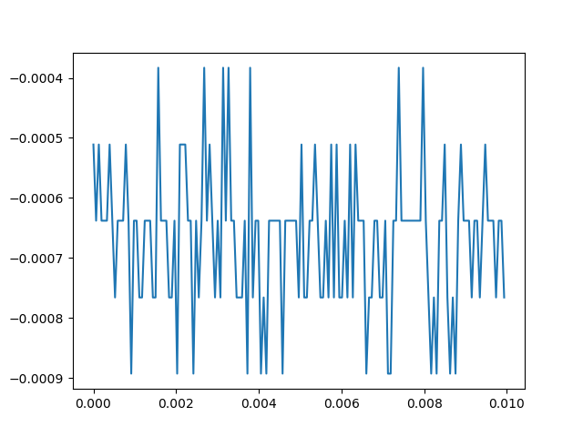
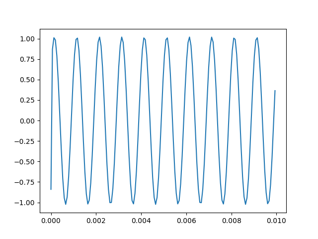
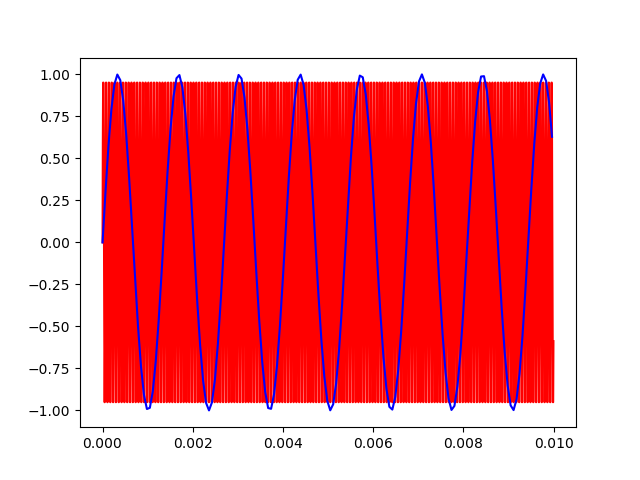
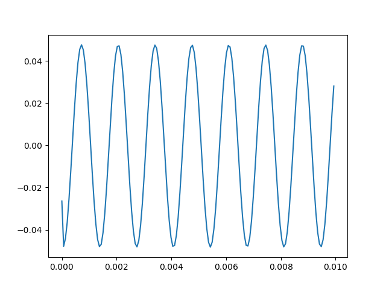

Sample at 15.258 kS/s.
Use the output to generate a 15.258 kHz signal.
My acquired signal should be DC.
Result: It seems to vary randomly between a 5 discrete levels. With the 14 bit ADC representing -1V to 1V, each level represents 2V/2^14 = 122uV.
Interestingly, you would expect it to be DC, but with its value fixed by the phase of the incoming signal. Thus, different acquisitions would have different DC values.
However, I plotted it for a few different acquisitions and it was roughly the same (about 0) every time. Seems to suggest some filtering may be happening.

Sample at 15.258kS/s.
Use the output channel to generate a 1kHz wave.
Snag first .01 seconds. With period of 1ms, I should see 10 periods.
Result: Looks pretty good.

Sample at 15.258kS/s.
Use the output channel to generate a 16kHz wave.
Expected result if I plot the first .01 seconds of time domain data (background is the actual signal):

Actual result:

As you can see, the aliased signal is clearly there, but attentuated by a factor of 200.
Seems like the Red Pitaya built-in acquisition program does some filtering.